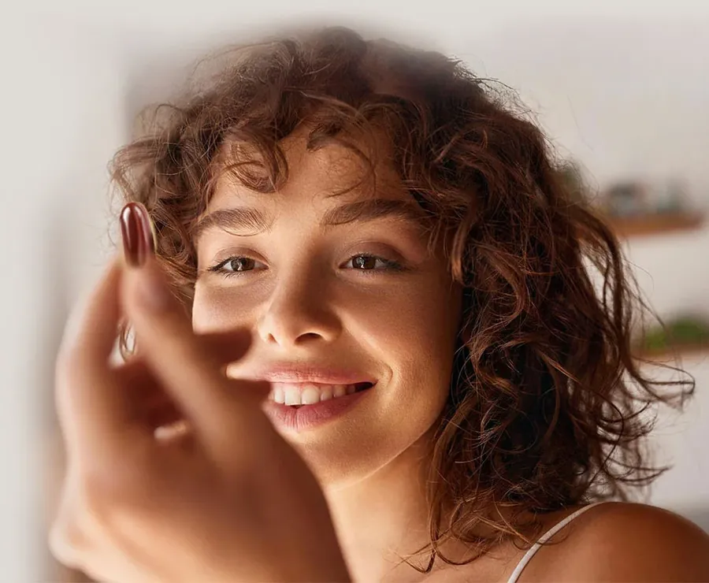

Shop by Category
Beauty
Skincare powered by stem cell technology to refine wrinkles, restore skin layers and defend against environmental damage.

Beauty From Within
Healthy skin starts with healthy cells
Your skin is your body’s largest organ and its first line of defence. It is easily affected by diet, stress, lack of sleep, pollution, UV and the wrong skincare, all of which can lead to early ageing, dark spots and wrinkles.
Deep within the skin, fibroblast cells produce collagen and hyaluronic acid, which keep skin firm, supple and hydrated. As we age, this production slows and cell turnover decreases, so fine lines, uneven tone and dryness become more visible.
Lasting radiance comes from caring for skin on two levels: renewing its cells and protecting them from the damage of everyday life.
Common Skin Concerns
What ZÉLL-V skincare targets
Stem cell technology and advanced protection, working together for visibly younger skin.
Fine lines & wrinkles
StemPlus stem cell technology supports cell regeneration to refine wrinkles.
Dullness & uneven tone
The AGE-Reverse system helps prevent visible signs of ageing and increase luminosity.
Tired, thinning skin
Restoring the skin’s layers helps it look smoother, fuller and more supple.
Pollution & UV damage
SPF50 with the award-winning PolluShield system defends skin from environmental damage.
The ZÉLL-V Approach
A simple two-step routine
Restore your skin’s cells, then protect them, every day.
- 1
Restore
ZÉLL-V Phytocell Serum
A wrinkle-refining youth activator with the stem cell ingredient StemPlus and the AGE-Reverse system. Apply to a cleansed and toned face and neck every morning and evening.
- 2
Protect
ZÉLL-V Wonder Cream SPF50
An age-defying skin guard that combines UV and pollution protection with PolluShield for a flawless, even-toned complexion. Apply after the serum every morning.
Nourish your skin from within too: sheep placenta helps revitalise the fibroblast cells that make collagen. Explore Rejuvenation
Shop Beauty
Beauty products
Good to Know
Beauty: common questions
What is StemPlus?
StemPlus is a new-generation, quantifiable stem cell ingredient that supports cell regeneration and the restoration of the skin’s layers. It is the key ingredient in ZÉLL-V Phytocell Serum.
How do I use the Serum and Wonder Cream together?
Apply Phytocell Serum to a thoroughly cleansed and toned face and neck every morning and evening. In the morning, follow with Wonder Cream after your toner and serum, blending it evenly over the face and neck.
Can supplements help my skin too?
Yes. Skin is nourished from the inside as well as the outside. Sheep placenta helps revitalise fibroblast cells, supporting the skin’s natural collagen and hyaluronic acid. Explore our Rejuvenation range.
- Swiss & GermanExclusive formulation by renowned scientists and clinicians
- New ZealandSheep reared using the stringent ‘close colony’ method
- GFSTT & IAOSSResearch and development led by international medical experts
- SecureCheckout with PayPal or card. Prices in USD.
Explore
Other categories
Category
Detoxification
Cellular nutrition that nourishes your cells and supports natural detoxification, powered by organic marine algae cell factors.
Shop DetoxificationCategory
Rejuvenation
Sheep placenta cellular therapy from New Zealand to renew, repair and revitalise your cells from within.
Shop RejuvenationCategory
Anti-Ageing
Advanced formulas and therapies that target ageing at its core, from DNA repair to total skin revitalisation.
Shop Anti-AgeingCategory
Beauty
Skincare powered by stem cell technology to refine wrinkles, restore skin layers and defend against environmental damage.
Shop Beauty